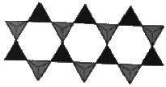
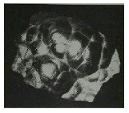
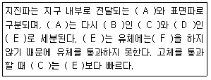
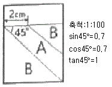
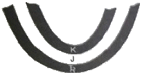
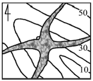
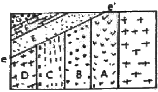
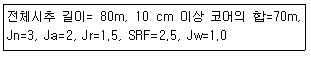
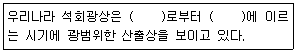

응용지질기사 (2016-10-01 기출문제)
1과목: 암석학 및 광물학
1. 스카른을 생성하는 변성작용으로 옳은 것은?
- 파쇄변성작용
- 광역변성작용
- 동력변성작용
- 접촉변성작용
(정답률: 77%)

2. 대량의 안산암 용암이 분출하는 곳은?
- 대륙의 열곡대
- 암판이 수렴하는 섭입대
- 암판이 분리되는 곳 (해령)
- 해양판 내부의 개별적인 화산
(정답률: 79%)
3. 세립질 기질을 15% 이상 포함하며 장석, 석영, 암편이 거의 같은 비율로 구성된 퇴적암은?
- 석영사암
- 암편사암
- 잡사암 (그레이와케)
- 장석질사암 (아르코스)
(정답률: 82%)
4. 수분을 4% 이하 포함한 유리질 화산암으로 성분은 유문암과 비슷한 것이 대부분이며 파면이 패각상인 것은?
- 분석
- 부석
- 진주암
- 송지암
(정답률: 67%)
5. 주로 석영으로 구성된 변성암인 규암(quartzite)의 생성과정은?
- 파쇄작용 (cataclasis)
- 화강암화작용 (granitization)
- 재결정작용 (recrystalliztion)
- 변성분화작용 (metamorphic differentiation)
(정답률: 80%)
6. 화성암의 모드 분석(mode analysis)에 대한 설명으로 옳은 것은?
- 구성광물의 종류와 함량을 부피 백분율로 분석하는 것
- 화성암을 편광현미경으로 관찰, 분석하는 것
- 화성암을 화학성분으로 분석하는 것
- 화성암을 육안관찰로 분석하는 것
(정답률: 74%)
7. 화성쇄설암 중 주로 화산회(4mm 이하의 입자)로 되어 있는 암석은?
- 집괴암
- 응회암
- 각력응회암
- 화강섬록암
(정답률: 80%)
8. 화성암의 IUGS 분류기준에 속하지 않는 성분은?
- 휘석
- 석영
- 사장석
- 알칼리장석
(정답률: 81%)
9. 이질암이 광역변성작용을 받았을 때 가장 고변성도의 변성분대에서 나타나는 변성 광물은?
- 녹니석
- 십자석
- 남정석
- 규선석
(정답률: 62%)
10. 다음 중 퇴적암에서 가장 풍부한 암석은?
- 탄산염암
- 이질암
- 사암
- 역암
(정답률: 62%)
11. 일축성 결정에 대한 설명으로 옳지 않은 것은?
- 결정축이 하나이다.
- c결정축과 광축이 일치한다.
- 정방정계와 육방정계의 결정이다.
- 광축방향에서는 등방체와 같은 광학적 성질을 띤다.
(정답률: 56%)
12. 역학적인 변형에 대한 저항의 정도가 낮은광물에서 높은 광물의 순서로 올바르게 표시된 것은?
- 인회석 –석영- 형석
- 석고- 형석-정장석
- 석영- 정장석- 석고
- 정장석 –황옥- 방해석
(정답률: 73%)
13. 다음 중 가역천이(Enantiotropy)의 관계인 것은?
- 황철석-백철석
- 아라고나이트-방해석
- 저온석영-고온석영
- 정장석-사장석
(정답률: 75%)
14. 규산염 광물은 SiO4 사면체의 결합 형태에 따라 구분한다. 아래 그림은 각섬석의 구조로서 사면체가 한 방향으로 길게 연결된 사슬이 2가닥으로 이루어진 복쇄형 (double chain)규산염 구조를 보여준다. 이때 최소 단위의 사면체의 Si:O의 비는 얼마인가?

- 1:3
- 1:4
- 2:7
- 4:11
(정답률: 66%)
15. 결정이 성장하면서 일정한 모습을 가지게 되는데 이를 정벽 (habit)이라 한다. 그림은 적철석에서 흔히 관찰되는 정벽인데 무엇이라 하는가?

- 신장상
- 방사상
- 어란상
- 수지상
(정답률: 66%)
16. 원소의 분류로 옳지 않은 것은?
- 금속원소 – Al, Mg, Fe
- 비금속원소 – C, Ar, B
- 알칼리 금속원소 – K, Na, Li
- 희토류 원소 – La, Ce, Lu
(정답률: 67%)
17. 준장석 (feldspathoid)그룹에 속하지 않는 광물은?
- 류사이트(leucite)
- 제올라이트(zeolite)
- 네펠린(nepheline)
- 소달라이트 (sodalite)
(정답률: 49%)
18. 알바이트 (albite) 쌍정의 쌍정면은 다음 어느 결정면에 해당하는가?
- (100)
- (010)
- (011)
- (111)
(정답률: 78%)
19. Gibbs의 상률(phase rule)을 올바르게 표시한 것은? (단, P: 상(相)의 수, F: 자유도, C: 성분의수)
- P+C=F+2
- P=C+F-2
- P+F=C+2
- P=C+F+2
(정답률: 78%)
20. 분자 내의 원자가 그 원자의 결합에 관여하고 있는 전자를 끌어당기는 정도를 나타내는 척도를 의미하는 것은?
- 이온반경
- 이온화포텐셜
- 이온화에너지
- 전기음성도
(정답률: 74%)
2과목: 구조지질학
21. 압쇄암대 (mylonite zone)의 설명으로 옳지 않은 것은?
- 세립질 (fine-grained)이다.
- 층상구조가 잘 발달(strongly layered appearance)된다.
- 큰 전단응력에 의해 생성된다.
- 퇴적구조가 잘 보존되어 있다.
(정답률: 73%)
22. 평행수계에 대한 설명으로 옳지 않은 것은?
- 암석의 성분이 같고, 균일한 경사를 가진 곳에서 많이 발달한다.
- 주류는 일반적으로 단층이나 주요 단열구조를 나타낸다.
- 주류와 이루는 거의 같은 각을 이루면서 만난다.
- 주로 고립되어 있는 산 또는 돔 지형에서 나타난다
(정답률: 63%)
23. 다음 중 넓은 의미의 주향이동단층에 속하지 않는 단층은?
- Transform fault
- Transcurrent fault
- Wrench fault
- Thrust fault
(정답률: 83%)
24. 지구의 내부 단면구조에서 지구표면 아래에 위치하는 암석권 (Lithosphere)의 평균 두께와 가장 가까운 것은?
- 약 10km
- 약 100km
- 약 2300km
- 약 2600km
(정답률: 78%)
25. 다음 중 (A)부터 (F)까지 순서대로 올바르게 나열한 것은?

- 실제파 – 종파 - p파 – 횡파 - S파 - 탄성반응
- 실제파 - 밀도파 - p파 - 횡파 - S파 - 연성반응
- 실제파 – 횡파 - S파 – 밀도파 - P파 - 연성반응
- 실제파 – 밀도파 - S파 – 횡파 - P파 - 탄성반응
(정답률: 85%)
26. 리히터로 진도 7.3의 지진은 진도 5.3의 지진에 비해서 약 몇 배에 해당하는 에너지를 방출하는가?
- 2배
- 10배
- 100배
- 1000배
(정답률: 66%)
27. 주향 N30E, 경사 60NW의 절리면이 있다. 이 절리면의 극점의 방향을 방향각 (trend)/기운각(plunge)으로 바르게 표시한 것은?
- 120/60
- 120/30
- 300/60
- 300/30
(정답률: 48%)
28. 변성암에서 구성광물의 배열방향과 거의 관계없이 생성되는 벽개 (cleayage)는?
- 점판벽개 (slaty cleavage)
- 파랑쪼개짐 (crenulations cleavage)
- 단열벽개 (fracture ceavage)
- 편리 (schistosity)
(정답률: 53%)
29. 지구 내부의 구조 중 상부맨틀의 주 구성 암석은?
- 현무암
- 감람암
- 유문암
- 에클로자이트
(정답률: 75%)
30. 그림에서 A암층의 두께는?

- 1.2m
- 1.4m
- 1.6m
- 1.8m
(정답률: 74%)
31. 다음 중 지구 내부의 맨틀 대류에 의해 설명될 수 있는 현상은?
- 지각의 밀도 변화
- 대륙의 물의 양 변화
- 판의 이동
- 지구 핵의 자기장
(정답률: 82%)
32. 다음 그림을 설명하는 용어로 맞는 것은? (단, Tr, J, K는 각각 지질시대를 나타내는 약자이며, 순서대로 Triassic, Jurassic, Cretaceous를 의미한다.)

- 배사 (anticline)
- 향사형 배사 (synformal anticline)
- 향사 (syncline)
- 배사형 향사 (antiformal syncline)
(정답률: 66%)
33. 과거에 호수였던 미고결 지층을 굴착하던 중에 식물 파편을 발견하였다. 이 식물파편의 매몰연대를 측정하는 데 사용되는 방사성동위원소로서 가장 적합한 것은?
- 우라늄-납
- 탄소
- 칼륨-알곤
- 루비듐-스트론튬
(정답률: 84%)
34. 해저확장이 일어나는 판의 경계형태는?
- 발산경계
- 수렴경계
- 변환단층경계
- 충돌경계
(정답률: 85%)
35. 규암층(짙은 부분)의 지질도를 적성하여 다음 그림과 같은 지질분포도에 대한 설명으로 옳은 것은?

- 경사습곡 (Inclined fold)
- 북동-남서 선주향의 수평습곡축
- 배사습곡
- 부정합
(정답률: 70%)
36. 배게용암이 형성되는 곳은?
- 물속
- 완만한 경사를 가진 화산체
- 급한 경사를 가진 화산체
- 화구
(정답률: 82%)
37. 사행 하도에서 침식이 가장 많이 일어나는 곳은?
- 굽이의 바깥쪽
- 굽이의 안쪽
- 굽이의 중앙
- 우각호 지역
(정답률: 83%)
38. 다른 지층과 암상이 구별하기 쉬운 층으로 광범위하게 분포하며 거의 동시에 퇴적된 지층을 통칭하는 용어는?
- 열쇠층
- 사단층
- 시사층
- 화산재층
(정답률: 79%)
39. 지질도 상에 부정합면을 표시한 그림에서 e-e'면이 부정합면일 때 다음 중 가장 오래된 지층은?

- E
- G
- F
- A
(정답률: 81%)
40. 대륙-대륙 충돌대 (continent-continent collisional belt)의 직접적 혹은 간접적인 증거가 아닌 것은?
- 다이아몬드(diamond)
- 코에사이트 (coesitie)
- 연옥(nephrite)
- 에클로자이트 (eclogite)
(정답률: 62%)
3과목: 탐사공학
41. 다음 중 탄성파의 특성에 대한 설명으로 옳지 않은 것은?
- 종(p)파는 입자의 진동과 파동의 전파방향이 서로 평행하다.
- 레일리 (Rayleigh)파는 입자의 진동과 파동의 전파방향이 같은 방향으로 운동한다.
- 스톤리 (Stoneley)파는 고체와 액체의 경계면에서 발생한다.
- 황(S)파는 파동의 운동방향에 따라 SV파와 SH파가 있다.
(정답률: 77%)
42. 심부퇴적층 탐사에서 가장 정확한 자료를 얻을 수 있는 탐사방법은?
- 탄성파탐사
- 지화학탐사
- 방사능탐사
- 자력탐사
(정답률: 81%)
43. 48채널을 이용한 탄성과 반사빔 탐사에서 매 수진기 간격의 2배마다 발파하여 자료를 수집할 때 공심점 취합은 몇 %인가?
- 300%
- 600%
- 1200%
- 2400%
(정답률: 48%)
44. 지하투과 레이더탐사범(GPR)에 대한 설명으로 옳지 않은 것은?
- 고해상도의 물리탐사방법이다.
- 수십 Hz 이하의 주파수를 사용한다.
- 일반적으로 반사법이 가장 널리 사용된다.
- 가탐심도가 작으므로 주로 천부조사에 적용된다.
(정답률: 78%)
45. 자력 측정치를 수치 미분하여 작성된 제 2차 미분도의 특성으로 옳은 것은?
- 심부 자성체의 영향이 돋보인다.
- 천부 자성체의 영향이 돋보인다.
- 지형의 영향이 없어진다.
- 저주파 잡음이 모두 없어진다.
(정답률: 63%)
46. 전기비저항 감층을 통해서 알 수 있는 정보가 아닌 것은?
- 지층의 공극률
- 지층의 물 포화율
- 지층의 변형률
- 지층의 탄화수소 포화율
(정답률: 68%)
47. 중력은 지구의 중심으로부터 멀리 떨어질수록 작아지는데 지상에서 1m 상승함에 따라 감소되는 양은 약 얼마인가?
- 30.86mgal
- 3.086mgal
- 0.3086mgal
- 0.03086mgal
(정답률: 68%)
48. 통계학적인 관점에서 파형을 스파이크로 가장 잘 변환시키는 필터를 무엇이라 하는가?
- Decon 필터
- Wiener 필터
- Bandwidth 필터
- Notch 필터
(정답률: 73%)
49. 다음 광물 중 방사선 방출이 가장 약한 광물은?
- 우라늄
- 토륨
- 칼륨
- 철
(정답률: 74%)
50. GPR 탐사에서 주로 사용하는 전기쌍극자 안테나의 특성으로 옳은 것은?
- 안테나 길이가 길수록 중심주파수가 높다.
- 안테나 길이가 짧을수록 중심주파수가 높다.
- 안테나 길이가 길수록 출력이 높다.
- 안테나 길이와 중심주파수는 무관하다.
(정답률: 75%)
51. 방사능 광물을 찾기 위한 gas탐사에서 가장 적합한 원소는?
- Potassium
- Uranium
- Thorium
- Radon
(정답률: 70%)
52. 다음 원소 중 지표 부근의 환경조건에 따른 상대적 이동도가 가장 큰 것은?
- Cl
- Si
- Al
- Fe
(정답률: 73%)
53. 우리나라 인근 해상에서 탐사선이 동쪽 방향으로 이동해가면서 해상 중력 탐사를 실시한 후, 해수면을 기준으로 하여 중력보정을 행하였다. 다음 설명 중 옳은 것은?
- 부게 보정값은 빼주어야 한다.
- 지형 보정값은 빼주어야 한다.
- 프리에어 보정값은 빼주어야 한다.
- 예트뵈스 보정값은 빼주어야 한다.
(정답률: 52%)
54. 탄성파탐사는 크게 굴절법탐사와 반사법탐사로 나누어진다. 굴절법탐사에서 주로 사용하는 파는?
- 선두파 (head wave)
- 러브파 (Love wave)
- 레일리파 (Rayleigh wave)
- 다중반사파(Multiple reflections)
(정답률: 73%)
55. 시추공 내의 대략적인 지하수위 깊이를 짐작하는 데 적합하지 않은 지구물리 검층은?
- 전기전도도검층
- 전기비저항 검층
- 온도검층
- 공경 검층
(정답률: 57%)
56. 자연전위 탐사에서 기준이 되는 기점전극을 설치하기에 가장 적합한 곳은?
- 광체노두 상부
- 광체노두 부근 가까운 곳
- 광체로부터 멀리 떨어진 곳
- 광체 위치와 관련 없이 설치가 쉬운 곳
(정답률: 60%)
57. 직류 또는 저주파 교류를 시추공 내에 위치하는 이동전극 C1과 지표 상에 고정되어 있는 전극 C2 사이에 흘려보내고 두 전극 사이에 있는 지층의 전기저항을 측정하는 검층법은?
- 단극 전기저항 검층
- 노말 전기비저항 검층
- 래터렐 전기비저항 검층
- 전자유도 검층
(정답률: 62%)
58. 석유탐사 검층 중 감마선 물리검층을 하는 주목적은?
- 유문암층을 판별하기 위함이다.
- 셰일층을 판별하기 위함이다.
- 화강암을 판별하기 위함이다.
- 대수층을 판별하기 위함이다.
(정답률: 83%)
59. 광역 지화학 탐사에 적합하지 않은 대상 시료는?
- 자연수
- 표사
- 충사
- 암석
(정답률: 60%)
60. 석회암, 산성 화성암, 염기성 화성암 중에서 대자율 값이 가장 작은 것은?
- 석회암
- 산성 화성암
- 염기성 화성암
- 모두 동일한 값을 갖고 있음.
(정답률: 63%)
4과목: 지질공학
61. 수리전도도가 100m/day, 수리경사가 5/1000이고, 계곡 폭이 150m이며 충적층의 두께가 50m일 때 충적층의 전 두께를 통해 유역 밖으로 1일 동안 유출되는 지하수량은?
- 3750 m3/day
- 5000 m3/day
- 15250 m3/day
- 60000 m3/day
(정답률: 59%)
62. 암석의 물리적 풍화작용을 일으키는 요인으로 가장 거리가 먼 것은?
- 물의 동결융해작용
- 온도변화
- 염의 결정화
- 산성비의 작용
(정답률: 71%)
63. 다음 중 피압대수층에 해당하는 것은?
- 점토층 하부에 사력층이 있는 경우
- 사력층 하부에 점토층이 있는 경우
- 점토층 상하부에 사력층이 있는 경우
- 사력층 상하부에 점토층이 있는 경우
(정답률: 62%)
64. 통일분류법에 의한 흙의 공학적 분류기호 중 GW의 대표명으로 옳은 것은?
- 입도 분포가 양호한 자갈 또는 자갈-모래 혼합도
- 입도 분포가 불량한 자갈 또는 자갈 모래 혼합도
- 실트질 자갈 또는 자갈-모래-실트 혼합토
- 점토질 자갈 또는 자갈-모래-점토혼합토
(정답률: 77%)
65. 일축압축시헙 시 암석 시험편 양끝단과 가압판의 사이에 발생하는 마찰효과(end effect)에 대한 설명으로 옳지 않은 것은?
- 시험편 내 마찰효과가 작용하는 부분이 상대적으로 클수록 강도는 증가한다.
- 마찰효과로 인해 시험편 양끝단에 전단응력이 발생한다.
- 마찰효과로 인해 시험편 양끝단에 가해지는 압축응력은 주 응력이 아니다.
- 마찰효과의 영향을 감소시키기 위해서는 시험편의 길이/직경의 비를 1이 되게 하여야한다.
(정답률: 48%)
66. Q-system 의 평가요소에 대하여 다음과 같은 결과를 얻었다. Q값을 이용하여 RMR값을 추정하면 얼마인가? (단, RMR과 Q의 관계식은 Bieniawski(1976)의 제안식을 이용한다.)

- 43.5
- 53.5
- 63.5
- 73.5
(정답률: 38%)
67. 연약지반 개량공법 중 점성토 지반에 적합하지 않은 것은?
- 통압밀 공법
- 샌드 드레인 공법
- 전기 침투 공법
- 프리 로딩 공법
(정답률: 44%)
68. 터널의 굴착에 있어서 불연속면의 방향성과 관련하여 가장 유리한 조건은?
- 불연속면의 주향이 터널 축방향과 평행하고 불연속면의 경사가 작은(20~45) 경우
- 불연속면의 주향이 터널 축방향과 평행하고 불연속면의 경사가 큰(45~90) 경우
- 불연속면의 주향이 터널의 축방향에 수직하고 불연속면의 경사가 크며 (45~90) 경사방향으로 굴착하는 경우
- 불연속면의 주향이 터널의 축방향에 수직하고 불연속면의 경사가 작으며 (20~45) 경사가 반대방향으로 굴착하는 경우
(정답률: 56%)
69. 포화된 암석으로부터 중력으로 인해 배수되는 물 체적의 비율을 무엇이라 하는가?
- 비보유율
- 비산출률
- 비저류율
- 투수율
(정답률: 76%)
70. 터널의 일상적인 시공관리상 반드시 실시해야하는 일상계측항목에 해당하지 않는 것은?
- 터널 내 관찰조사
- 록볼트 축력측정
- 전담침하측정
- 내공변위측정
(정답률: 65%)
71. 암반 불연속면의 과학적 기재와 관련하여 국제암반역학회(ISRM)에서 제사하는 10가지 요소에 포함되지 않는 것은?
- 불연속면의 벽면강도 (wall strength)
- 불연속면의 충전물질 (infilling)
- 불연속면의 표면 거칠기 (surface roughness)
- 불연속면의 종류 (sort)
(정답률: 52%)
72. 물을 많이 포함하고 있는 입자간격이 느슨한 고결물질들은 지진동에 의해서 다짐작용을 받게 되면 과포화 상태에 도달하게 되어 액체와 같은 상태로 변화가 되는 현상을 무엇이라 하는가?
- 분사현상
- 히빙현상
- 액상화현상
- 압밀현상
(정답률: 87%)
73. 지하수위가 지표면과 동일한 지면에서 지하 100m 지점의 공극수압의 크기는 얼마인가? (단, 중력가속도는 10m/sec2으로 한다.)
- 0.1MPa
- 1MPa
- 10MPa
- 100 MPa
(정답률: 60%)
74. 직경이 500mm인 코아시료에 직경방향으로 점하중시험을 실시한 결과 점하중갇오가 10 MPa일 때 추정 일축압충강도는 얼마인가?(오류 신고가 접수된 문제입니다. 반드시 정답과 해설을 확인하시기 바랍니다.)
- 60 MPa
- 120 MPa
- 240 MPa
- 360 MPa
(정답률: 22%)
75. 흙의 한점에 작용하는 최대 주응력과 최소 주응력이 각각 4kg/ cm2, 2kg/ cm2 일 때 최소 주응력의 방향과 60도를 이루는 면 상의 전단 응력은 얼마인가?
- 0.87 kg/ cm2
- 1.5 kg/ cm2
- 1.87 kg/ cm2
- 2.5 kg/ cm2
(정답률: 40%)
76. Barton의 불연속면 전단강도 비선형모델에 영향을 미치는 요소가 아닌 것은?
- 수직응력(σn)
- 불연속면의 압축강도(JCS)
- 불연속면의 거칠기계수 (JRC)
- 지질강도지수(GSI)
(정답률: 72%)
77. 시추조사 시 암석의 시추추상도에 기대되는 사항으로 적합하지 않는 것은?
- 풍화 정도
- 일축압축강도
- 시추코어 회수율
- 암석의 중류
(정답률: 54%)
78. 미끄러짐에 의해 발생하는 산사태의 종류 중 일반적으로 점성이 있고 균질한 토층에서 발생하는 산사태로 오목한 형태의 굽은 표면을 따라 발생하는 것은?
- 토석류
- 이류
- 회전형 산사태
- 전이형 산사태
(정답률: 59%)
79. 다음 중 사면안정방법을 안전율을 유지하는 공법과 안전율을 증가시키는 공법으로 구분할 때 안전율을 유지시키는 공법에 해당되는 것은?
- 앵커(Anchor)공법
- 록볼트(Rock bolt)공법
- 다웰 바(Dowel bar) 공법
- 숏크리트(Shotcrete)공법
(정답률: 58%)
80. 지하 암반의 초기 응력을 측정할 수 있는 방법이 아닌 것은?
- 수압파쇄시험법 (Hydraulic fracturing test)
- 오버코어링법 (Overcoring method)
- 평판재하시험법(Plate loading test)
- 플랫 잭법(Flat jack method)
(정답률: 59%)
5과목: 광상학
81. 열수광상에서 모암의 변질작용과 관련이 없는 것은?
- 견운모화작용
- 황옥화작용
- 녹니석화작용
- 명반석화작용
(정답률: 52%)
82. 다음 광물 중 천열수광상에서 생성될 수 없는 광물은?
- 크롬철석
- 황철석
- 진사
- 스티브나이트
(정답률: 40%)
83. 다음은 우리나라 석탄층 분포와 관련이 있는 평안계 지층들이다. 이 중 가장 하부에 존재하는 지층은?
- 홍점통
- 사동통
- 고방산통
- 녹암통
(정답률: 61%)
84. 우리나라에서 마그네사이트(magnesite)의 큰 광상이 들어있는 지층은?
- 마천령계
- 연천계
- 옥천계
- 상원계
(정답률: 59%)
85. 다음 중 양질의 석탄을 많이 포함한 지층은?
- 풍촌층
- 묘봉층
- 장성층
- 동점층
(정답률: 67%)
86. 전기절연제, 내화재, 화장품, 종이, 비누 등의 제조에 사용되는 광물은?
- 알루미늄
- 철
- 장석
- 활석
(정답률: 73%)
87. 다음 중 반암동광상에 대한 설명으로 옳지 않은 것은?
- 주요한 광상 생성 시기는 중생대 및 신생대이다.
- 광물조합은 Cu-Mo-Au로 특징된다.
- 성인적으로 중성-산성 관입암체와 밀접히 관련된다.
- 반암동광상의 변질대 중심부는 점토화변질대 (이질변질대)가 특징적이다.
(정답률: 54%)
88. 대표적인 지열수계에 해당하는 Salton Sea Geothermal Brine, Cheleken Geothermal Brine에 포함되는 염소, 나트륨, 칼슘, 칼륨의 풍부도를 비교한 것으로 옳은 것은?
- 염소＞ 나트륨＞ 칼슘＞ 칼륨
- 나트륨＞ 염소＞칼슘＞ 칼륨
- 염소＞칼슘＞ 나트륨＞ 칼륨
- 나트륨＞염소＞칼륨＞ 칼슘
(정답률: 58%)
89. 성층암 누층이 습곡되었을 때 생기는 배사부의 공극을 채운 광맥은?
- 단층 광맥
- 안상 광맥
- 사다리형 광맥
- 각력파이프 광맥
(정답률: 56%)
90. 반려암, 섬록암, 화강암에 함유된 회유원소 중 가장 풍부한 원소는?
- niobium
- platinum
- chromium
- titanium
(정답률: 54%)
91. 우리나라의 금, 은 광상의 주 광화 시기는?
- 신생대
- 중생대
- 고생대
- 선캠브리아기
(정답률: 72%)
92. 열수광상의 광물들로부터 관찰되는 유체포유물이 제공해주는 광상에 대한 정보가 아닌 것은?
- 열수유체의 화학성
- 온도조건
- 압력조건
- 생성광물
(정답률: 56%)
93. 우리나라 동광상에 대한 설명으로 옳지 않은 것은?
- 동광상의 대부분은 열극충진 맥상광상에 해당한다.
- 주요 동광상의 분포는 경상분지에 위치한다.
- 경남 함안-군북 지역의 동광상은 반암동광상에 해당한다.
- 우리나라의 동광상을 성인별로 크게 나누면 열극충진 맥상광상, 접촉교대광상, 화산각리파이프광상, 반압동광상 등으로 대별할 수 있다.
(정답률: 50%)
94. 비료용 광물에 대한 설명으로 옳은 것은?
- Carnallite는 황산질 비료의 원료이다.
- 질소비료의 원료인 KNO3는 풍화광상에서 산출된다.
- 인산질 비료의 원료인 인회석은 물에 잘 녹지 않는다.
- 인회석은 사방정계 광물이다.
(정답률: 67%)
95. 열수광상의 모암변질작용 중 모암이 백운모 계열의 미립광물집합체로 치환되는 변질작용은?
- 변질안삼암화작용(Propylitization)
- 규화작용(Sillicification)
- 녹니석화작용( Chloritization)
- 견운모화작용 (Sericitization)
(정답률: 65%)
96. 암석을 포함한 암석이 풍화되어 유수 등에 의해 운반, 퇴적된 광상으로 충적평원, 하안단구 기타 하천의 유로 인근에 형성된 광상인 표사광상에서 관찰되는 유용광물이 아닌 것은?
- 백금
- 이리도스민 (Iridosmine)
- 다이아몬드
- 황동석
(정답률: 51%)
97. 일반적으로 잠두광체의 탐사 시 광체의 인지를 위해 1차적으로 활용되는 것은?
- 층서
- 풍화대
- 변질대
- 화성암체의 진화특성
(정답률: 65%)
98. 제철, 합금, 화학용(건전지, 착색제 등), 사진용 원료로 주로 사용되는 망간광의 주요 성인에 해당되니 않는 것은?
- 열수맥상광상
- 마그마 분화에 의한 정마그마형 광상
- 호저, 해저의 Mn의 화학적 침전
- 석회암, 백운암 및 응회암 등을 교대한 열수교대광상
(정답률: 59%)
99. VMS(volcanic massive sulfide) 광상을 산출하는 금속에 따라 구리-아연 그룹과 아연-납-구리 그룹으로 구분할 때, 그룹이 다른 것은?
- 노란다형(Noranda-type)
- 구로코형(Kuroko-type)
- 사이프러스형( Cyprus-type)
- 베시형(Besshi-type)
(정답률: 52%)
100. 다음(` )에 알맞은 지질 시대를 순서대로 옭게 연결한 것은?

- 선캠브리아기-석탄기
- 석탄기-트라이아스기
- 쥐라기-백악기
- 백악기-제3기
(정답률: 64%)